What The Hack 2023
7 September 2023
On a fine day, I took on an unpaid (but indescribably fulfilling) gig to design for SUTD's flagship hackathon: What The Hack 2023. "OMG I GET TO CREATE A MASCOT AND PLASTER IT ALL OVER THE PLACE?! I'm in."
'Design & Publicity Lead' was the title bestowed upon me. I was tasked with the following:
- Designed the event's visual identity — mascot, colour palette, the works
- Put together presentation slides and event swag (lanyards, shirt, stickers, desktop mat)
- Ran event promotion on social media
What The Hack 2023 turned out to be something special. The organising committee pulled in sponsorships from the likes of TikTok, DBS, and Accenture — fully funding the event for 400 participants, plus 4 panel talks with industry experts across the board. I'm glad my designs got to be a part of it.
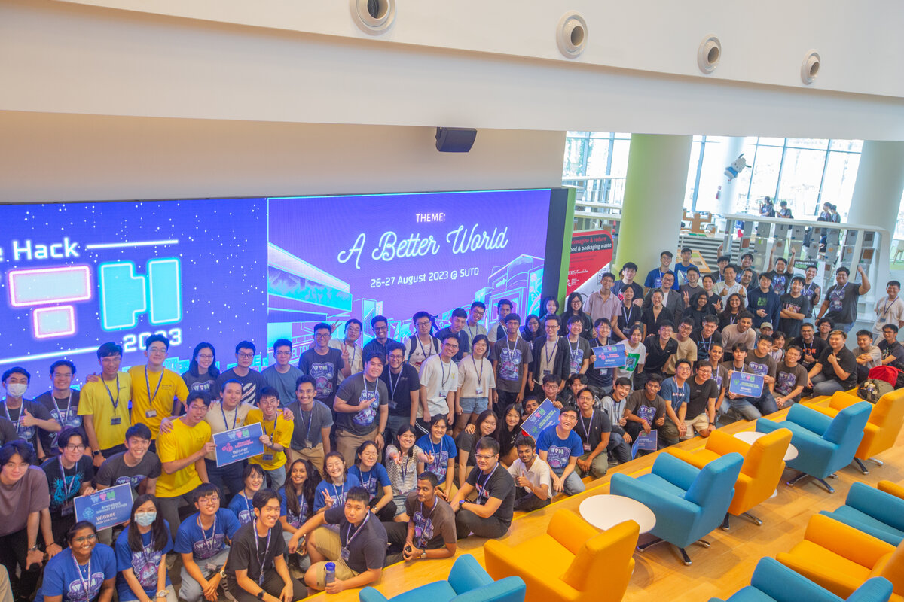
> What is What The Hack?
What The Hack is SUTD's annual hardware and software hackathon, where engineers, creators, and designers team up to build innovative solutions to real-world problems. It's an overnight event — participants come in from multiple disciplines, get access to SUTD's fabrication lab (3D printers, laser cutters, the works), and leave with something built.
The spirit of it is interdisciplinary chaos in the best way. Teams are required to submit working prototypes and present them exhibition-style to judges on day two.
> Visual Identity
The topics for the year were:
- Financial Technologies
- AI-enabled Internet of Things
- Circular Economy & Sustainable Living
- Inclusivity & Accessibility Tech
I was determined to go for a cyberpunk feel — that means neon lights, dark backdrops, the whole vibe. Make it colourful, electric and hard to ignore. And since sustainability was one of the themes, I wove in some organic elements too, so it wasn't all cold chrome and neon.
With that, we're looking at this colour palette.
> Creating the Mascot
My favourite part, heh. This little creature would become the face of What The Hack 2023.
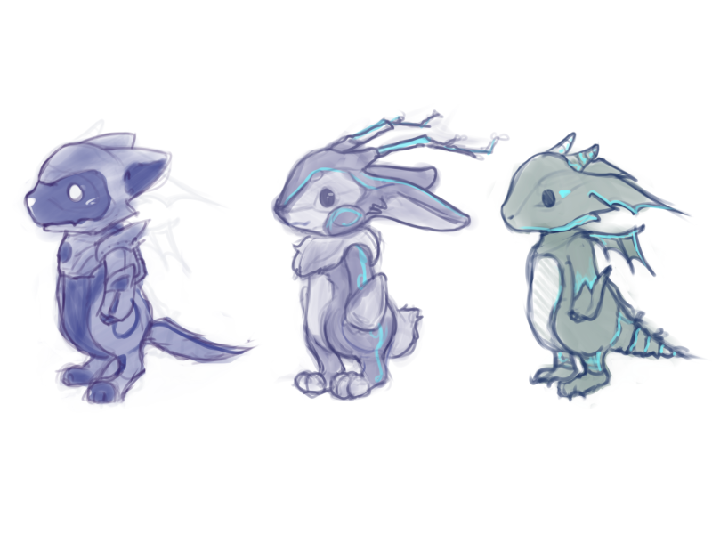
Deciding which animal the mascot should be based on.
There were similar features amongst the mascots:
- Mechanical appearance: nods to the hardware side of the hackathon.
- Neon lights: glowing outlines and accents to sell the cyberpunk aesthetic.
- Strong expressions: a mascot needs to carry personality at a glance, both face and body had to be read clearly.
In the end, I went with the jackalope — its antlers naturally double as tree branches, which gave me a sustainability angle none of the other animals had. Look at the little leaves on the antlers!
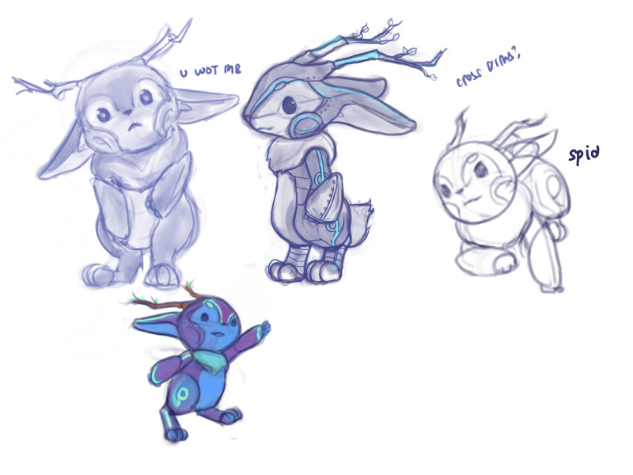
Testing the versatility of the character design and drafting its colours.
I couldn't think of a good name for the longest time, right up until the event itself. Panic-settled on "HackBun" at the last minute. I'm aware that it's more of a jackalope than a bunny but "HackJack" doesn't sound any better either. Oh well.
> The World of WTH 2023
I dreamt of a world that felt lived-in — neon signs, towering buildings, with a sense of hope and opportunity. Think: a city at night, teeming with life, where every corner has something going on. I wanted the participant to feel like they are stepping into an adventure.
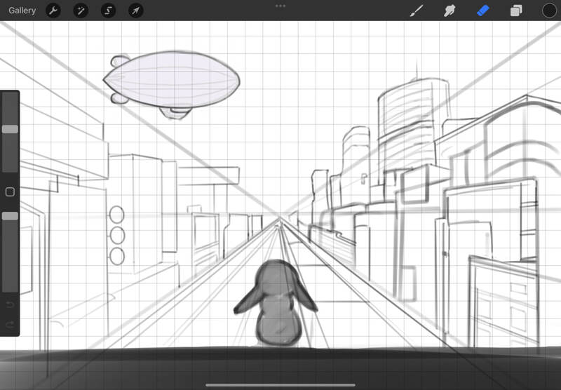
See if you can spot the following in the fully coloured art below:
- Reference to each of the 4 topics
- Financial Technologies
- AI-enabled Internet of Things
- Circular Economy & Sustainable Living
- Inclusivity & Accessibility Tech
- Reference to Ted Lasso :P
- Default Procreate brushes used
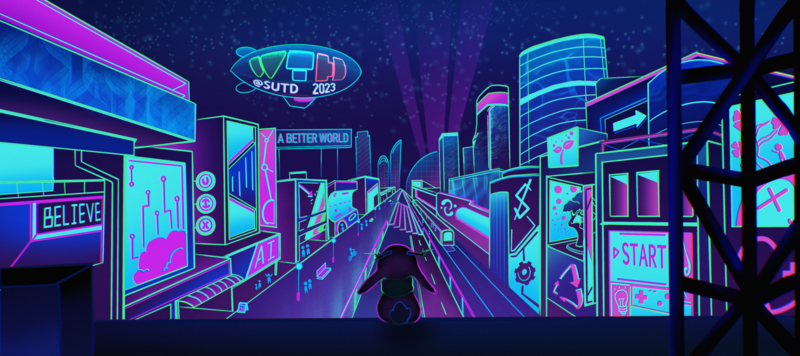
> Swag Design
Free swag is always a highlight. Every participant walks away with something cool regardless of skills or placement, so I wanted to make sure it was actually worth keeping. To the drawing board!
The swag for that year consists of:
- Desktop mat
- Full CMYK shirt
- Lanyard
- RFID card
- Stickers
The budget allowed us to go for full CMYK coloured designs. Aww yeah.
>> Swag: Shirt Design
I felt a bit of pressure for this one. Hundreds of people would be walking around wearing the shirt, so it had to look good. A full design across the shirt (not just a tiny logo) means it's one of the first things people notice when they meet each other.
The shirt should:
- WTH 2023 first: It will adopt the colour palette for this event.
- HackBun feature: The star of the show. Its cuteness lures all eyes.
- Align with the themes: Reference to the 4 topics in this hackathon.
I initially came up with this design, with fully painted background and foreground.
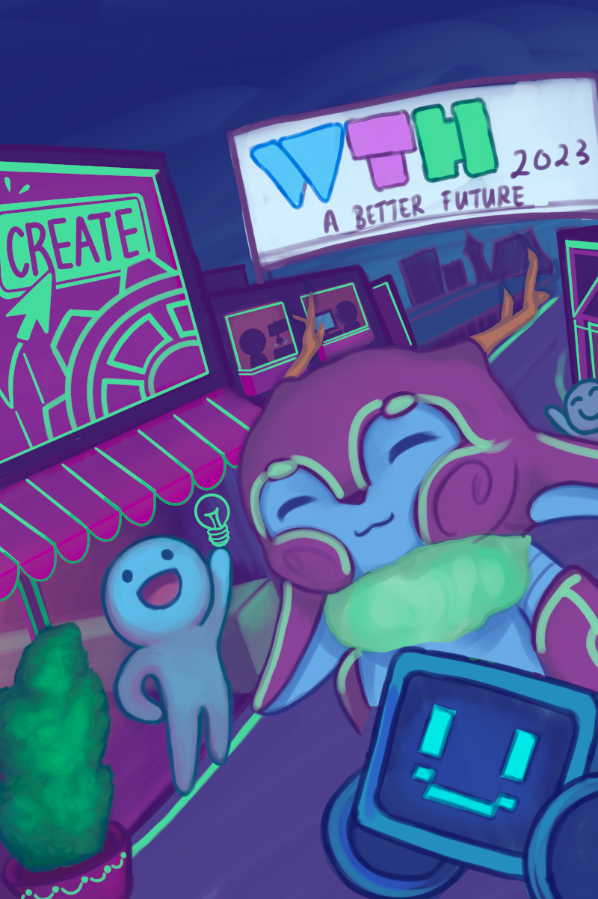
Partially rendered.
However, I abandoned this draft because I realised its edges will not blend seamlessly into the shirt base colour, making the graphic look too 'boxy'. Let's go for a design whose shape is more dynamic.
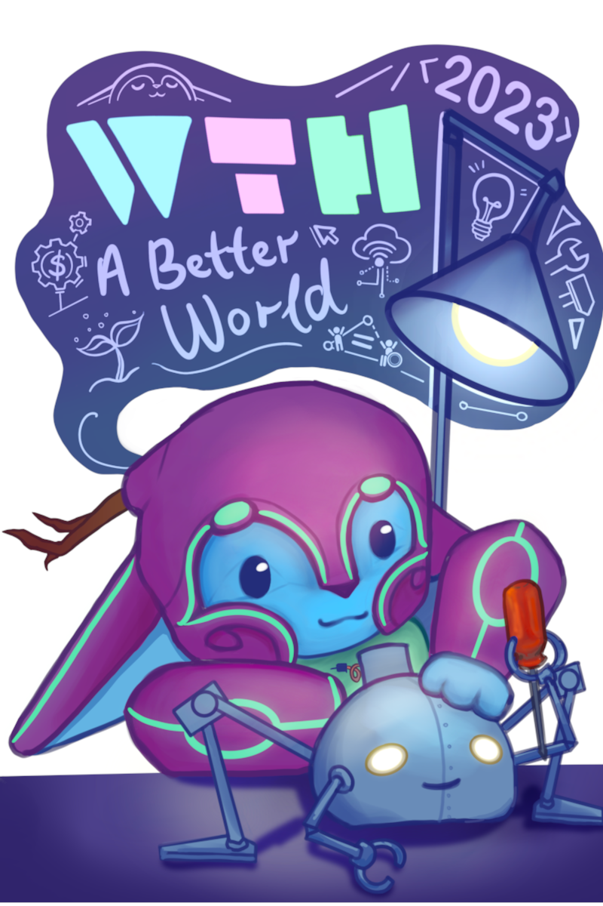
Final art to be exported and printed.
Here's a look at the design iterations.
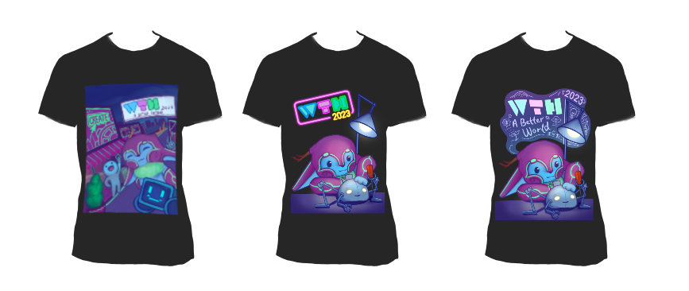
The first draft's boxy edges didn't blend into the shirt and you can see it clearly here. The middle draft uses the default WTH 2023 logo, but that left a lot of dead space in the centre. The final version fills that space by making the whole composition more fluid and dynamic — which, honestly, fits the ideation and innovative spirit of the event pretty well.
If you were a participant reading this, and thinks that the other drafts were better: ...oops lol.
>> Swag: Stickers
I had a blast drawing HackBun with different styles and expressions.
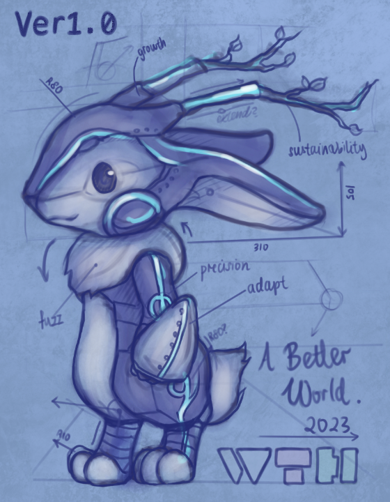
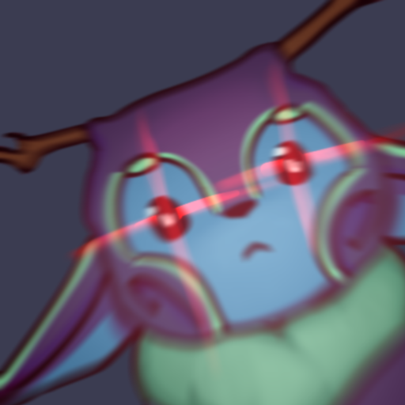
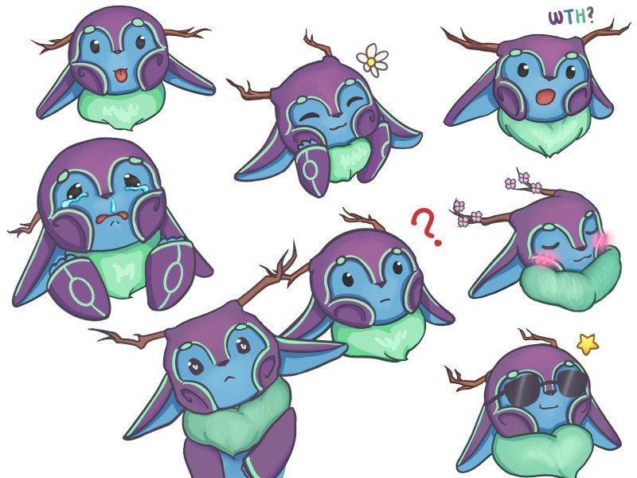
Yes, I took inspiration from League of Legends emotes.
This sticker pack is available on Telegram at this link. ;D
>> Swag: Desktop Mat, RFID Card & Lanyard
The desktop mat and RFID card feature the WTH 2023 world art. The lanyard takes a different angle — a day-night split of the same city: one side bathed in daylight, the other lit up at night. A nice contrast against the shirt, and a little reminder that hackathons don't stop when the sun goes down.
>> Swag: How did they turn out?
Overall, I was quite pleased about how they turned out. I did learn a few things about exporting art for printing: colours print duller than they look on screen, so pumping up the saturation before export can help a lot.
> Self-Rating
7/10: Spent too much time drawing, more effort should be put into publicity. What's the point of creating when there's fewer people to see it?
One regret I had is that I should have posted on social media more. Looking back, that year's Instagram feed was noticeably quieter and less vibrant than the years that followed. I think that more promotional posts leading up to the event would have made the feed far more colourful and eye-catching. It would have built more hype going into the event too.
> Conclusion
There's a well-known artist problem where you stare at your own work long enough that you start to hate it. I wasn't sure if the designs were too childish, too busy, too something. And seeing my own art plastered everywhere on the day itself is its own strange experience — I wasn't sure if the knot in my stomach is anxiety about what people think, or just my eye catching every flaw in real life. Probably both. But looking back now, I think it turned out alright. I hope everyone who attended had a great time, and that the merch was worth keeping.
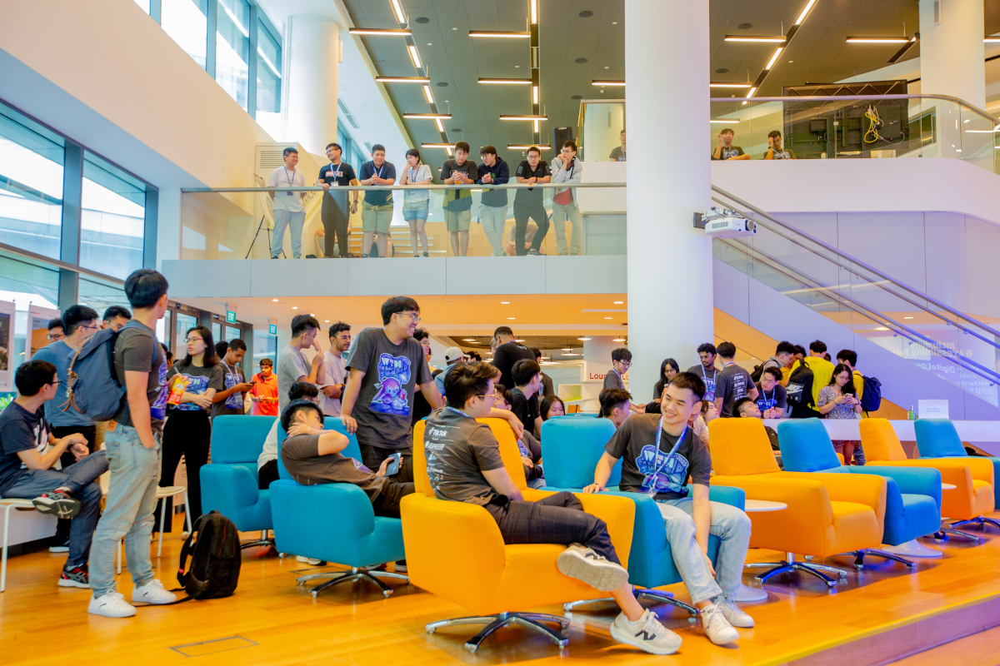
I was also pleasantly surprised when I found out that the designers for the following years (2024 & 2025) decided to recreate their own versions of HackBun! Knowing that a character I dreamed up became part of WTH's recurring identity, I'm really grateful they kept the lil' jackalope alive.
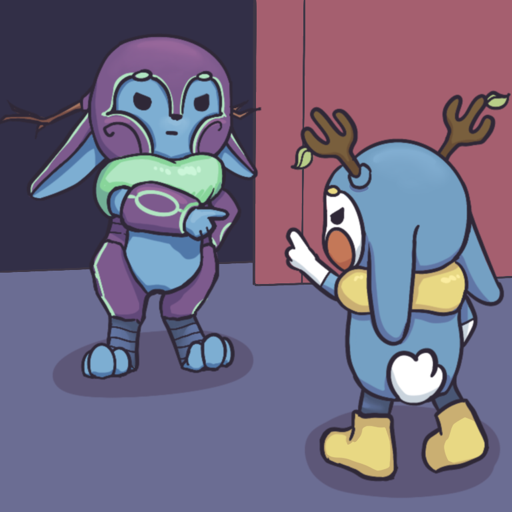
I drew a mandatory spiderman meme with WTH2024 mascot.